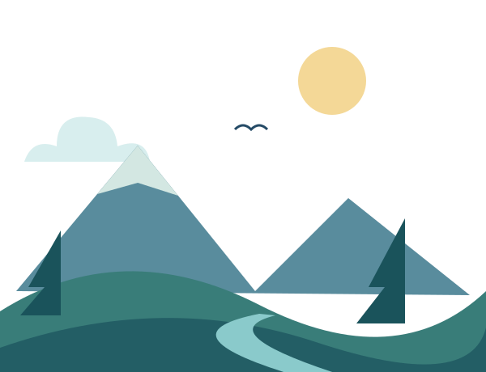
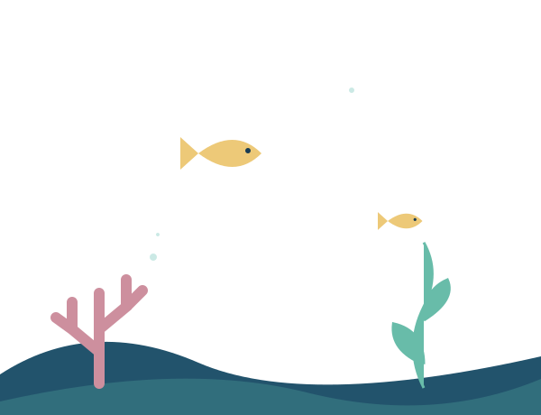
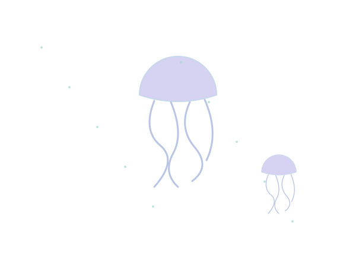
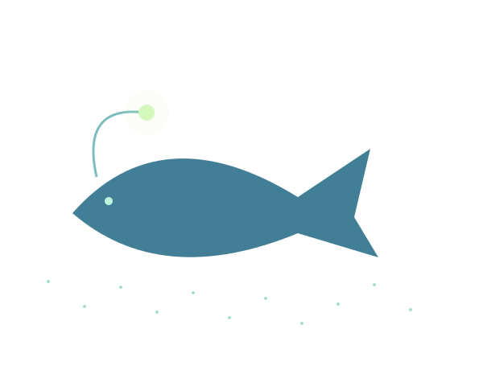

YOUR PLANETARY RIPPLE
One planet.
Many connections.
To replace a rejected key, create one in Google AI Studio, update the GEMINI_API_KEY value used to start the local server, then restart server.py. The website cannot create Google API keys.
Your everyday choices travel through a living system. Scroll down to follow the ripple from sky to sea.
01 / ATMOSPHERE
A delicate blue shield
Stratosphere · home to the ozone layer
High above the clouds, the ozone layer absorbs much of the Sun's harmful ultraviolet radiation. Ozone protection depends on limiting ozone-depleting chemicals; the climate effects of everyday energy use are a separate, connected story.

02 / ATMOSPHERE
The air we share
Troposphere · where weather and daily life meet
Transportation, home energy, and the food we grow all shape greenhouse gas emissions. These gases gather in the air around us, influencing the climate systems every community depends on.

03 / OCEAN
Where sky meets sea
Sunlit zone · the ocean's bright, living skin
The ocean absorbs heat and carbon from the atmosphere. Its sunlit surface supports tiny drifting plankton, seagrass, coral reefs, and the food webs that sustain life far beyond the shoreline.

04 / OCEAN
Into the blue twilight
Twilight zone · light fades, life adapts
Below the reach of most sunlight, ocean currents carry heat, oxygen, and nutrients across enormous distances. What happens on land can reach the sea through runoff, waste, and the changing climate.

05 / OCEAN
Life in the deep
Midnight zone · a world without sunlight
In the deep ocean, life thrives under immense pressure and in darkness. The deep sea stores carbon over long timescales, linking the choices we make today to the stability of Earth's climate.

06 / OCEAN
One shared home
Abyssal plain · the bottom is another beginning
From the atmosphere to the ocean floor, Earth's layers are part of one living system. A footprint is not a verdict—it is an invitation to notice connections, ask questions, and choose a next step.